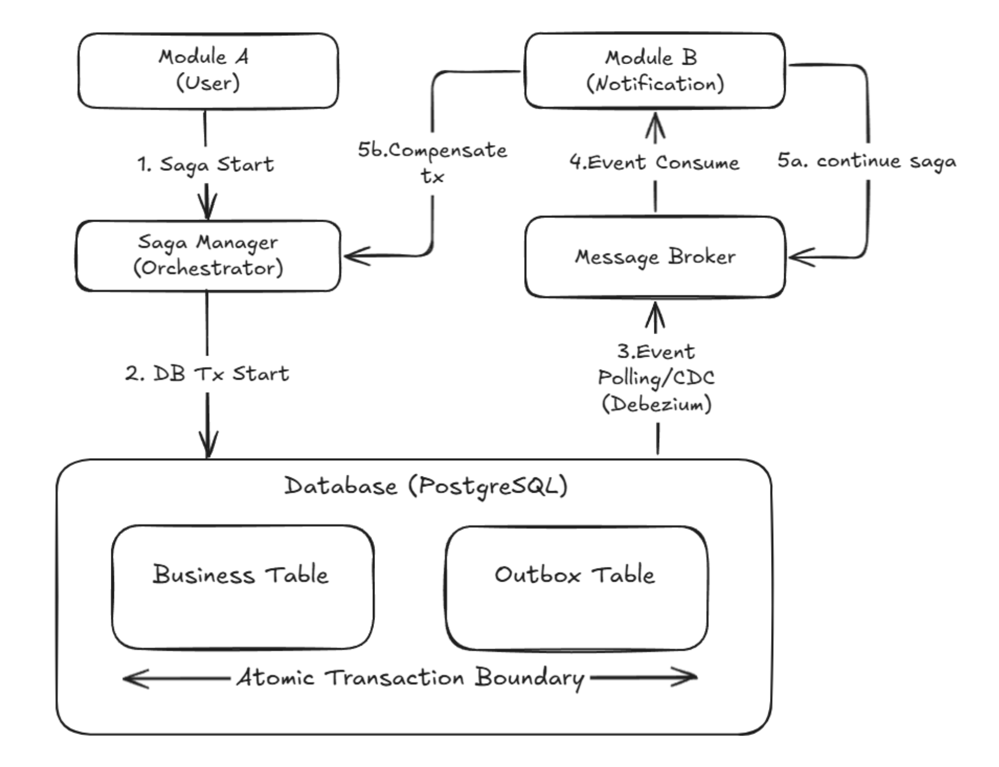

프로젝트 개요
사용자의 알고리즘 풀이 데이터를 분석하여 맞춤형 커리큘럼을 제공하는 서비스입니다.
여러 모듈에 걸친 비즈니스 로직에서 데이터 정합성을 보장하기 위해 Saga 및 Outbox 패턴을 적용한 분산 트랜잭션 처리가 핵심입니다.
Saga 및 Outbox 패턴 기반의 분산 트랜잭션 구현

algoreport-saga-architecture.png
배경 및 문제 원인
- 여러 모듈에 걸쳐 실행되는 비즈니스 로직(예: 사용자 가입 시 프로필 생성 및 환영 알림 등)에서 데이터 정합성 보장 요구사항 발생
- 모듈형 모놀리스 또는 마이크로서비스 환경에서는 단일 ACID 트랜잭션으로 모든 데이터 변경을 묶을 수 없어, 처리 과정 중 일부 장애 시 데이터 불일치 문제 발생
해결 과정
- 분산 트랜잭션 문제를 해결하기 위해 Saga 패턴(Orchestration-based) 도입
- 각 비즈니스 로직을 여러 단계의 로컬 트랜잭션으로 분리하고, 실패 시 보상 트랜잭션(Compensating Transaction)을 실행하여 데이터 일관성을 최종적으로 보장
UserRegistrationSaga, InitialDataSyncSaga 등 각 시나리오에 맞는 Saga 구현체를 작성하여 트랜잭션 흐름을 중앙에서 관리(Orchestrator)- 로컬 트랜잭션 커밋과 이벤트 메시지 발행을 원자적으로 보장하기 위해 Outbox 패턴 적용
- 비즈니스 데이터 변경과 발행할 이벤트를 동일한 DB 트랜잭션으로 묶어
outbox_events 테이블에 저장
- 별도의 이벤트 발행기(Debezium)가 Outbox 테이블을 폴링하여 메시지 브로커(Kafka)에 이벤트를 안정적으로 발행 — '최소 한 번 발행(At-Least-Once Delivery)' 보장
결과
- 특정 모듈의 장애가 전체 시스템의 데이터 불일치로 확산되는 것을 방지하여 시스템의 안정성과 회복탄력성(Resilience) 향상
- Saga 패턴을 통해 각 모듈의 비즈니스 로직이 명확해지고, 모듈 간의 결합도를 낮추어 유지보수성 및 확장성 확보